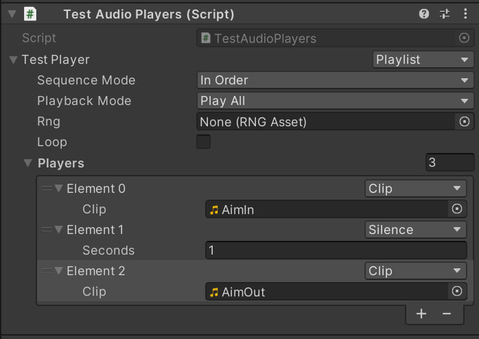
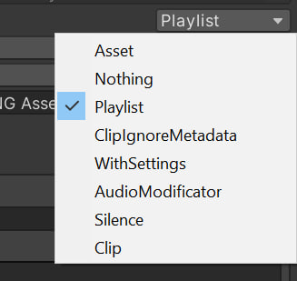
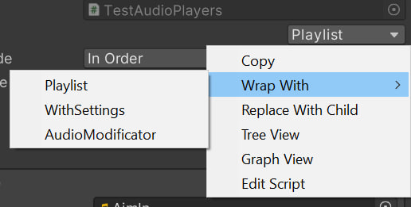
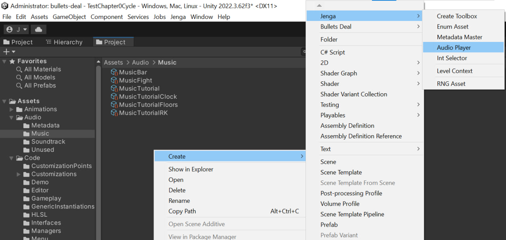
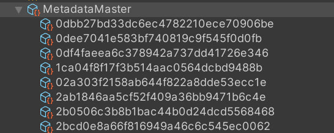
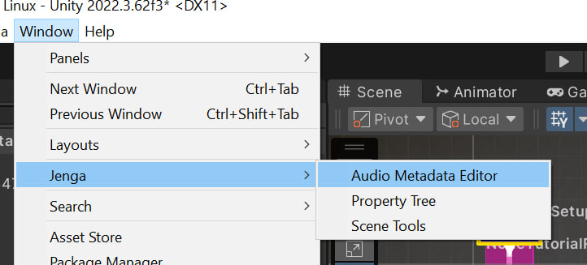
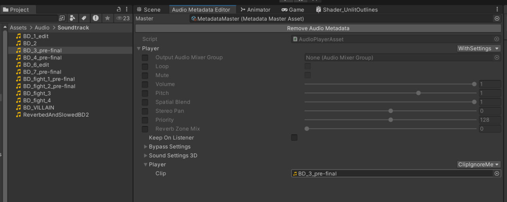

- Generated by
 1.18.0
1.18.0
|
Jenga
|
Audio Player System is created so that designers can setup and create complex sounds with minimal coding input. Audio Players are composable pieces of code that user can setup from Inspector in-place, Scriptable object assets or via separate metadata of AudioClipAssets. To extend functionality of AudioPlayers System one writes new class derived from AudioPlayer (for example refer to code of Jenga.ClipAudioPlayer). Audio Players are not separate audio system, they are built on top of AudioSources.
To use AudioPlayers one only needs to add serialized property to your MonoBehaviour, or any serializable via Unity class, with correct attributes and call one of its public function when you need to use it:
One can also built requred AudioPlayer entierly from code; it is convenient to use curly-braced initializers for this:
You can use jenga's type menu to create Audio Player entirely in inspector. Player, analogues to one in previous section, will look like this in inspector:

To create this use dropdown menus on righthand side to select required players:

You can also use right-click menu to get some advanced functionality:

If you want to setup complex audio player and then use it multiple times you probably should consider creating specific AudioPlayer Asset:

One sets up AudioPlayer asset in the same manner. Use AssetAudioPlayer (or just Asset in type-menu) to play AudioPlayer asset.
Audio Metadata is AudioPlayer asset created for any AudioClip Asset you need to. If you use ClipAudioPlayer and clip has such metadata, metadata will be played instead. All metadata contained in single asset called Metadata Master:

To add, remove and edit metadata one uses Audio Metadata Editor Window:

Once window open (and metadata master selected in it), select AudioClip, click on Create button and setup metadata you need:

Be careful! Dont use ClipAudioPlayer inside metadata, as it will trigger infinite recursion. Use ClipIgnoreMetadataAudioPlayer instead.
Main use case for metadata is to set up mixer group, change volume, modify sound before usage in game.